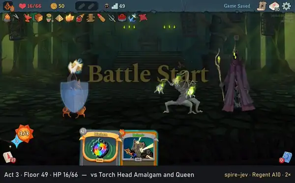
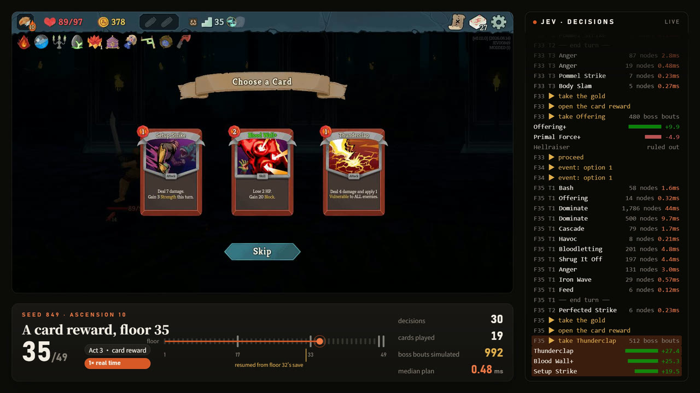
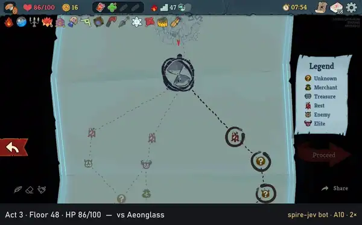

A narrow win, not a win rate.
spire-jev plays Slay the Spire 2 in the real game: all five characters, whole runs, no human input. A mod bridges the game to a planner, where each turn a simulator of the combat, checked against the game card by card, searches the order to play the hand in, well under a millisecond at the median, and rules make the choices around the fights. It has won at Ascension 10 twice. On the 90 seeds no change was tuned on, it has won none, and both numbers are on this page.

The Regent’s last fight, the Queen falling with the bot on 6 of 66 HP. This run was played from floor 1 to floor 49 in one go, no save in between: 20 fights, 20 won, 456 cards in 560 decisions (p50 2.0 ms, p95 122 ms). It is 1 of the 20 fresh seeds this configuration played, which reached floor 29.4 on average.
Search for the fights, rules for the rest.
The bridge
Loaded by the game’s own mod loader, it drives the game through its automated-play framework: it reports every decision the game waits on, with the cards’ real numbers, intents, powers and the draw pile, and plays the answer. Headless in sandboxes of its own, several at once.
Fights
A simulator of the cards, powers, relics, potions and the bosses’ move scripts, and a search over the orders a hand can be played in, equal states merged. After every card, the simulator’s prediction is compared with the game.
Everything else
Card values from tier lists and pick rates, a path chosen over the whole map, a budget for HP at rest sites, potions by rule, and card picks played out against the act’s boss in the simulator.

Two wins at Ascension 10, each with how narrow it was.

Both recordings match a headless run fight for fight. The whole runs are in the repository as video, with what the bot decided beside the game: every card it played, the positions its search expanded, the milliseconds that took. How they were recorded.
The confirmation set: 90 seeds, and the numbers as they fell.
The Ironclad at Ascension 10, on the best configuration published here, over seeds 496–585, which no change was tuned on. Changes are developed on other seeds; these 90 are kept for confirming them.
runs won. The two wins above were on newer rules than these.
mean floor reached of 49, where it was 22.0 on the same seeds before card picks were played out.
of the runs reaching act 1’s boss beat it, 56 of 79. Act 2’s boss: 7 of 30.
planning per decision at the median; p95 1.3 ms, the slowest 385 ms.
| seed | rules | how far | fights won | decisions, p50 / p95 |
|---|---|---|---|---|
| 707 | before card picks were played out | floor 48: died to the Queen, 279 HP left in her | 21 of 22 | 0.14 / 2.4 ms |
| 497 | picks played out against the act’s boss | floor 49: died to the Test Subject, one fight short | 19 of 20 | 0.13 / 1.1 ms |
| 849 | a closer look; floors 32–49 from its save | floor 49 of 49: won | 24 of 24 | 0.21 / 7.9 ms |
The three runs that reached act 3’s bosses, each on the code of its time and counted from its own logs. Across the 90, 850 of 937 fights were won, and the end-of-turn HP loss was predicted exactly on 3,387 of 3,461 turns. 34 of the 90 end in act 1; past it, the deck is the limit more than the play.
Most changes were noise. Some made it worse.
The working record keeps every change measured, including the ones that were noise and the ones that hurt. A few of them:
- 01Every A10 run stopped one fight shortThe game’s automated-play framework gives up at floor 49, where A10 puts a second boss, so until the bridge was fixed no A10 run could be won. Replayed with the fix, 497 met the Test Subject with 48 HP and died on its fourth turn.
- 02A look ahead that only worked where it was tunedA term for the rest of the fight took floors reached from 18.3 to 21.3 on seeds 1–15. On held-out seeds 16–45 it was no better and lost 7–10% more HP. It stays in the code, off.
- 03The simulator, on cards it hadn’t met2,482 cards on 15 seeds left 42 fields that differed from the game, all on four things approximated on purpose. Over the 90 confirmation runs, 13,068 cards left 746.
- 04Resting the way the winning runs didCopying the winners’ rest-site thresholds: on 60 saves, act 2’s boss beaten 12 times against 22, for 1.25 more upgrades. Harmful.
- 05Taking the shop’s card removal backA removal takes the gold the buys had. With its curses-only form, 3 boss fights turned won and 14 turned lost. Harmful.
- 06Nine candidates that read as zeroReviewed again, they were not worthless: undecided, stopped on budget, or harmful. Small nudges read on distant, noisy measures stay under the bar.
Each with its own rules, checked card by card.
IroncladStrength, Block, Exhaust. The longest worked on; every number above is its.
SilentPoison and Shivs. Poison ticks turn by turn; discards and Shivs are searched like any card.
NecrobinderOsty and Doom. Summons and Doom resolve in the game’s order.
RegentStars and the Sovereign Blade. 20 fresh seeds: floor 29.4 on average, one won.
DefectOrbs and Focus. 6 fresh seeds: all beat act 1’s boss, all died in act 2.
The rules for each are written from the game’s code and live in planner/src/characters/. When they came in,
the Ironclad was replayed from 18 saves fight for fight and differed only where its deck held another character’s
card, from a transform or a Prismatic Shard, which that character’s rules now model.
The characters.
The same planner, from the Steam Workshop.
Jev 自动爬塔 puts the bot inside your own game. Start a run as usual, and switch at any time: play it yourself, ask for its suggestion with F7, or hand it the run with F9 and watch it explain each card, pick, buy and path as it goes.
It runs this repository’s TypeScript in an embedded V8, with no network and nothing else to install, and on the same seed it plays the same run as the bot here, card for card. It plays only through the game’s normal choices and changes no numbers. At Ascension 10 it mostly falls in act 1 or 2.
Suggestions
The side panel shows what it would do from here; play a card and it plans again.
Hand it the run
It carries on from the current position at full speed, writing down why. F9 again takes it back.
Multiplayer
Each player’s copy plays for that player alone, with single-player logic.
A local install, a bridge, and Node.
$ cd mod/Bridge && dotnet build -c Release $ cd planner $ npm test # the simulator's rules, no game needed $ node src/run-fights.ts --seed 316 --runs 1 \ --port 47100 --cards take --choices rules2 \ --ascension 10 \ --flags pathdp,restbudget,potions2,sleep,spar $ node src/record.ts --seed 316 --ascension 10
Requirements. Slay the Spire 2 at the beta v0.111.0, the .NET 9 SDK for the bridge, and Node 24; the planner runs its TypeScript directly, with no dependencies.
Sandboxes. Each run gets sandbox/p<port>: hard links to the game’s files, its own mods folder and profile, so the real install and saves are never touched.
On screen. SPIRE_JEV_VISUAL=1 runs the game visibly; record.ts records one run.